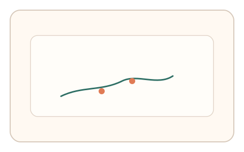
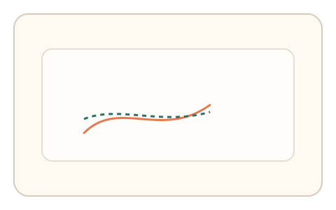
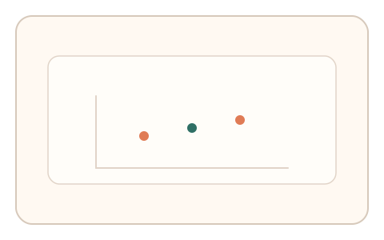

#157
Reverse Brainstorming - Round 2
已扩展
闭环微扰探针
交互中插入不可见微扰，测量即时修正曲线与响应时延。
概念原文
在交互过程中插入不可见微扰（随机摩擦/延迟/增益变化），测量用户的即时修正曲线与时延响应。
验证“真实反馈闭环”，脚本难以同步适配微扰。
研究背景
真实操控是闭环反馈过程，微扰会引发可测的修正与延迟。脚本难以同步适配微扰模式。
核心机制
- 在交互中注入随机微扰。
- 记录误差与修正轨迹。
- 测量响应时延与回拉。
- 与基线适应曲线比对。
用户流程
- 步骤 1：用户进行连续交互。
- 步骤 2：系统注入微扰并记录修正。
- 步骤 3：系统分析时延与适应曲线。
判定信号
修正时延
真实反馈存在可测延迟。
误差回拉曲线
人类修正呈渐进形态。
判定逻辑
修正时延与回拉曲线需落在人类区间；瞬时修正或无反应判异常。
对抗面
- 脚本预测微扰并预补偿
- 回放真实修正轨迹
防御与缓解
- 随机化微扰方向与幅度
- 短时多次微扰叠加
- 与反应时信号联合判定
可达性与风险
提供低强度微扰与放宽阈值选项。
- 微扰过强影响完成率
- 低性能设备延迟偏大
可视化状态

状态 1：微扰插入
交互过程出现不可见微扰。

状态 2：即时修正
记录修正轨迹与回拉。

状态 3：时延判定
评估修正时延与曲线。
参考资料
Closed-loop control
说明闭环反馈与修正。
Motor control
说明运动控制与反馈。